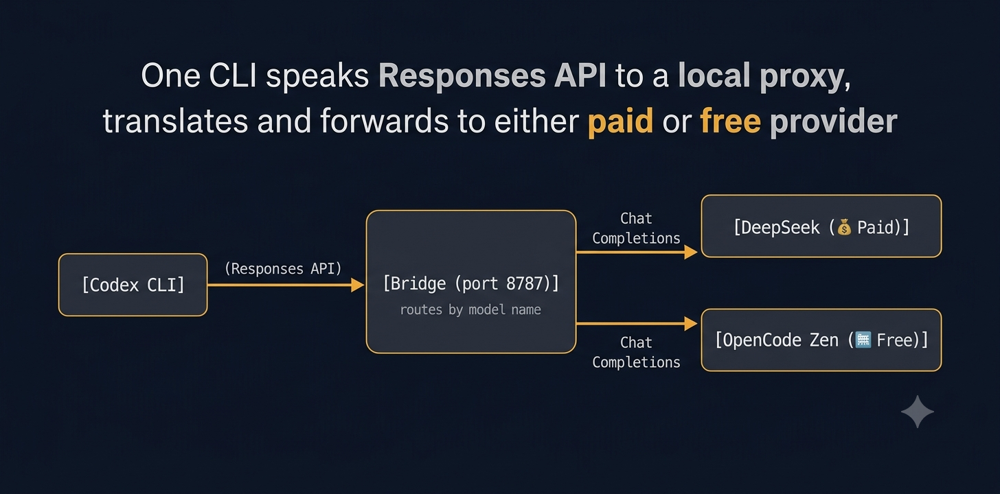

OpenAI 嘅 Codex CLI 去到 v0.142+ 之後，淨係識講 Responses API（POST /v1/responses），唔再支援傳統嘅 Chat Completions API。
問題係：DeepSeek、OpenCode Zen 呢啲第三方 provider 全部都係行 Chat Completions，兩邊 protocol 唔 compatible。
解決方法係起一個 local proxy bridge — 放喺 localhost:8787，幫 Codex 嘅 Responses API 翻譯做 upstream 嘅 Chat Completions。
而巧合嘅係，bridge config 可以同時定義多個 upstream provider，所以同一個 bridge 可以同時駁去 DeepSeek（收費）同 OpenCode Zen（免費），淨係 model name 唔同就得。

重點： Codex 永遠只對 bridge 講 Responses API。Bridge 根據你 request 入面嘅 model name，自動 route 去對應嘅 upstream — 唔使改任何 Codex config。
| Model | Provider | Cost | Context |
|---|---|---|---|
deepseek-v4-flash | DeepSeek (經 bridge) | 💰 Paid API | 1M tokens |
deepseek-v4-pro | DeepSeek (經 bridge) | 💰 Paid API | 1M tokens |
big-pickle | OpenCode Zen (經 bridge) | 🆓 Free | 大 context |
開始之前，你需要先裝好呢幾樣嘢：
| 必要工具 | 用途 | 點樣裝 |
|---|---|---|
| Codex CLI | OpenAI 嘅 coding agent CLI | npm install -g @openai/codex 或睇 官方 doc |
| Go | Build bridge binary | winget install GoLang.Go 或 golang.org |
| Git | Clone bridge source | winget install Git.Git |
| API Key (DeepSeek) | 收費 model | 去 platform.deepseek.com 註冊攞 key |
| API Key (OpenCode Zen) | 免費 model | 去 opencode.ai 註冊攞 key |
建議將 API key set 做 Windows user environment variable，咁就唔使直接寫入 config file：
setx DEEPSEEK_API_KEY "***"
setx OPENCODE_ZEN_API_KEY "your-zen-key-here"Set 完要 重新開 terminal 先生效。
如果你想搵 AI agent 幫你做晒成個 setup，可以直接 copy 呢段 prompt 俾佢：
Task: Set up Codex CLI to use DeepSeek & OpenCode Zen via a local bridge
Prerequisites already installed
- Codex CLI
- Go
- Git
- API keys set as env vars:
DEEPSEEK_API_KEY,OPENCODE_ZEN_API_KEYSteps
- Clone & build the bridge
git clone https://github.com/hyq1995/Codex-Bridge-Deepseek.git ~/dev/codex-bridge/bridge cd ~/dev/codex-bridge/bridge go build -o ../cli-proxy-api.exe .- Create bridge config at
~/dev/codex-bridge/config.yaml
- host: 127.0.0.1, port: 8787
- api-keys: ["local-bridge-key"]
- Two
openai-compatibilityentries:
- DeepSeek (paid):
https://api.deepseek.com/v1, models: deepseek-v4-flash, deepseek-v4-pro- OpenCode Zen (free):
https://opencode.ai/zen/v1, models: big-pickle- Read API keys from env vars
- Create bridge launcher at
~/dev/codex-bridge/start.bat— point to the config and binary- Configure Codex (
~/.codex/config.toml)
- Add
[model_providers.bridge]pointing tohttp://127.0.0.1:8787/v1- wire_api = "responses"
- experimental_bearer_token = "local-bridge-key"
- Create bridge profile at
~/.codex/bridge.config.toml
- model = "deepseek-v4-flash"
- model_provider = "bridge"
- Create a switch-model.py script to toggle between models
- deepseek-v4-flash (paid) ↔ big-pickle (free)
- Both use model_provider = "bridge"
Verify
- Start bridge:
~/dev/codex-bridge/start.bat- Run Codex:
codex -p bridge- Try:
codex -p bridge exec "say hello in Chinese" --skip-git-repo-check
呢個 prompt 唔係淨係俾 Codex 用 — 你可以直接貼俾任何 AI agent（Claude Code、Copilot、Gemini CLI、甚至你嘅 Hermes Agent），佢哋都睇得明逐 step 要做咩。重點係：
~/dev/codex-bridge/，整整齊齊基於兩個 open-source project：
reasoning_content carry-over、parallel tool_calls merging、model name suffix parsing）Build 出嚟係一個 54MB Go binary：cli-proxy-api.exe。
~/dev/codex-bridge/
├── cli-proxy-api.exe ← 54MB bridge binary
├── config.yaml ← Bridge config（定義晒兩個 upstream）
├── config.template.yaml ← Template（安全可 share）
├── start.bat ← Windows launcher
├── switch-model.py ← 快速轉 model script
└── bridge/ ← Cloned source repo
~/.codex/
├── config.toml ← Main Codex config
└── bridge.config.toml ← Bridge profilehost: "127.0.0.1"
port: 8787
api-keys:
- "local-bridge-key" # Codex authenticate bridge 用
openai-compatibility:
- name: "deepseek" # 💰 Paid
base-url: "https://api.deepseek.com/v1"
api-key-entries:
- api-key: *** models:
- name: "deepseek-v4-flash"
- name: "deepseek-v4-pro"
- name: "opencode-zen" # 🆓 Free
base-url: "https://opencode.ai/zen/v1"
api-key-entries:
- api-key: *** models:
- name: "big-pickle"同一段 config 入面定義晒兩個 provider，bridge 會根據 request 嘅 model name 自動 route 去對應嘅 upstream。
Codex 嘅 config 定義一個叫 bridge 嘅 provider：
[model_providers.bridge]
name = "CodexBridge (DeepSeek local)"
base_url = "http://127.0.0.1:8787/v1"
wire_api = "responses"
experimental_bearer_token = "local-bridge-key"Profile 就決定 default model：
# ~/.codex/bridge.config.toml
model = "deepseek-v4-flash"
model_provider = "bridge"注意 model_provider 永遠係 "bridge" — 因為無論用 DeepSeek 定 OpenCode Zen，Codex 都係同 bridge 講嘢。Bridge 睇返 model 個名去決定 forward 去邊個 upstream。
寫咗個 switch-model.py 嚟改 config.toml 嘅 model 同 model_provider：
python switch-model.py # 顯示選項
python switch-model.py 0 # deepseek-v4-flash (💰 paid)
python switch-model.py 1 # big-pickle (🆓 free)
python switch-model.py deepseek # same
python switch-model.py zen # same實際上只係改 TOML 兩行：
PRESETS = {
"bridge": {"model": "deepseek-v4-flash", "provider": "bridge"}, # 💰
"zen": {"model": "big-pickle", "provider": "bridge"}, # 🆓
}留意兩個嘅 provider 都係 "bridge" — 證明兩個 model 都係經同一個 bridge 出去。
start ~/dev/codex-bridge/start.batKeep 住個 window open。
# Default model（deepseek-v4-flash）
codex -p bridge
# 想轉免費 model？
python switch-model.py 1
codex -p bridgeBridge 唔使 restart — 改 model name 即刻見效。
netstat -ano | grep 8787
taskkill //PID <pid> //FHermes Agent 嘅 security redactor 會 detect API key pattern。Workaround：用 env var 注入 key，唔好直接寫入 file。
Codex config 嘅 experimental_bearer_token 要同 bridge config 嘅 api-keys match。
Model metadata not found for "deepseek-v4-flash"Codex 冇第三方 model metadata，但唔影響功能。
成個 setup 最得意嘅地方係：一個 bridge，兩個 world。
| DeepSeek V4 Flash | OpenCode Zen Big Pickle | |
|---|---|---|
| Cost | 💰 Paid (按量收費) | 🆓 Free |
| Context | 1M tokens | 大 context |
| Reasoning | ✅ 有 reasoning content | — |
| 經 Bridge | ✅ | ✅ |
| Switch 方法 | switch-model.py 0 | switch-model.py 1 |
Codex 嘅 Responses API limitation 本來係想鎖死你用 OpenAI models，但 community 寫咗 translation layer 之後，反而解鎖咗更大嘅靈活性 — 同一個 Codex 可以隨時 switch 去唔同嘅 provider，視乎 task 係要貴嘅 reasoning model 定係免費嘅 general model。
幾點 takeaways：
下一步可能會試埋駁 local Ollama model（都係經 bridge），咁就 offline 都有得用 Codex。
（Disclaimer：呢篇係 personal setup notes，API keys 同真實 credentials 已 sanitize。）